如今，许多人并不知道远方是什么？我问孩子，你喜欢远方吗？小伙子说，不喜欢，远方是什么地方？我喜欢宅在家里。 对年轻人来说，崇拜远方，不如喜欢家乡；打量虚幻而存在的远方，心灵去流浪，不如欣赏眼前的繁华。 若干年前，我是喜欢远方的。远方有连绵的山、一条大河、遥远的地平线和漂亮的姑娘。 在另一个城市，我看到路上有家乡驶来的班车，隔着150公里的距离，就感到是那样久违。但当我回到家乡，我的灵魂又开始躁动不安。人就是这样一种奇怪的动物，才告别，又开始怀念。
住在中央火车站附近的Flower Garden Hotel。早上拿着Roma Pass坐地铁到巴贝里尼广场，跟着谷歌地图一路走去万神殿，途径许愿池。许愿池可不像照片那么少人，池的对面人山人海。JK小姐姐用尽全力才拍到这个效果，点个赞。
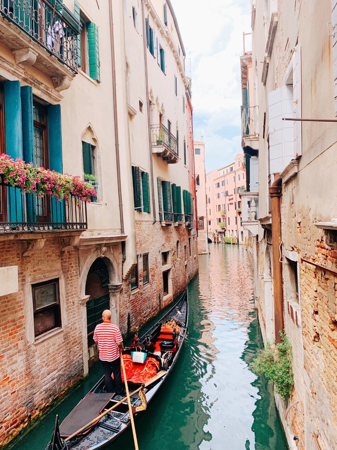
古罗马斗兽场
今年的旅行目的地又是很不妙，宗教的纷争烧到了 斯里兰卡 有时候新闻看多了，我们心头多少有点慌 历史的破坏和互相的厮杀，从来都没有停止过 你永远不知道下一秒的消失，会在世界的哪个角落 今天的主题是拒绝最火的游客点，看看 伊斯坦布尔 的生活面 但真正来了之后，才发现 伊斯坦布尔 的旅游行情如同烈日 它，一直在高负荷运转着，向亚欧两界敞开大门
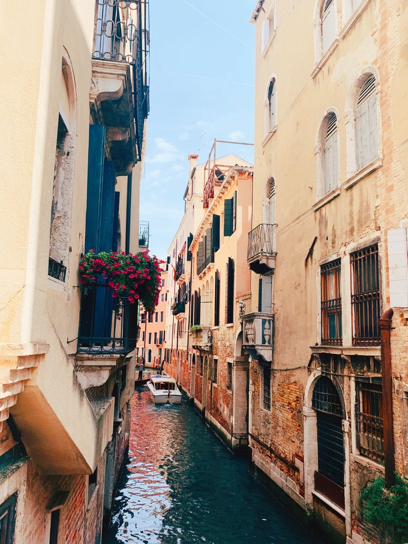
街景
人潮就在这座密密麻麻的城市里 如波浪一样此起彼伏 打开实时地图，每一处伟大的建筑遗留物前，都是人 放弃了最热门的蓝色清真寺，第一天的目标，是 巴拉特 的城市巡迹和第二大清真寺： 苏莱曼 寻找 苏莱曼 的路上 我们恍惚来到了 重庆 爬坡上坎的山城路，考验的是大家的脚力和车技 但那凌乱中的秩序感 又好像记忆中的 印度 原来， 伊斯坦布尔 的层次感，就是这混搭不同种族的微妙
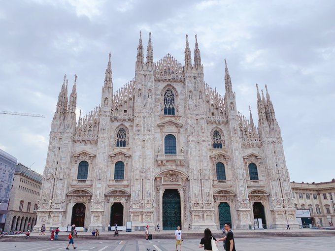
城市
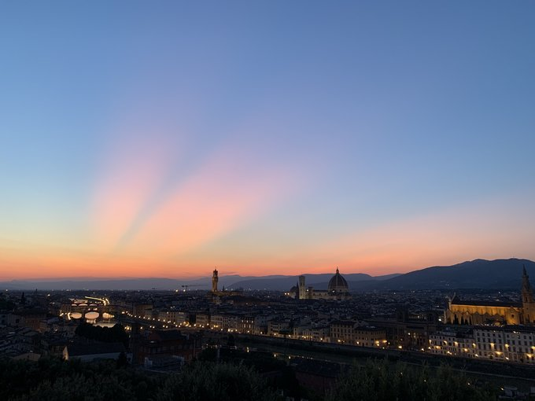
古罗马文化
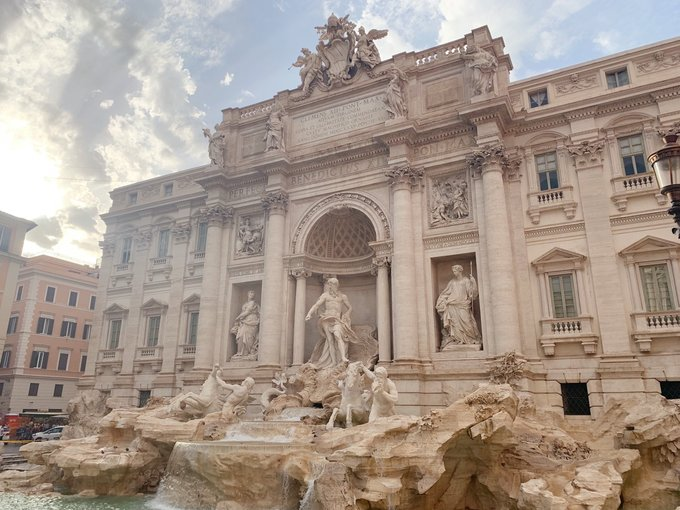
伊斯坦布尔，城市初印象 仿佛经历了一场海陆空洗礼 我们拖着行李，坐车坐船穿街倒巷的踏入了 伊斯坦布尔 对这座城市的丈量，是从下班高峰期开始的 城市中心的拥堵，是 伊斯坦布尔 并不浪漫的记忆 码头的人来人往，一不小心，就在博斯普鲁斯海峡中来回穿梭游荡 这是 土耳其 的春天，第一天的城市散漫，我们选择从清真寺开始 在 中国 的历史沿袭上，清真寺的由来就是个咬文嚼字的过程 唐宋时期称为“礼拜堂” 元代改为“礼拜寺” 明代定义为“清真教” 于是诵读古兰经的伊斯兰教，我们都喊清真 大学时候很傻，只知道清真的定义就是回族人觉得猪肉脏 于是第一次看见清真寺那个尖尖 我揣摩了半天，觉得那可能是个避雷针 这，就是很多时候 书本上从来不讲的知识考点
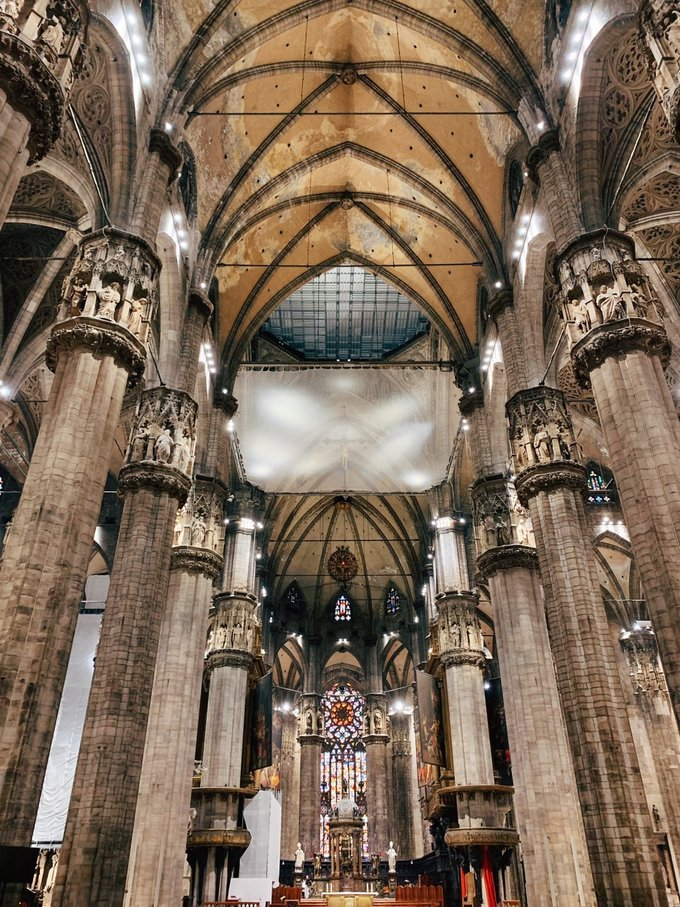
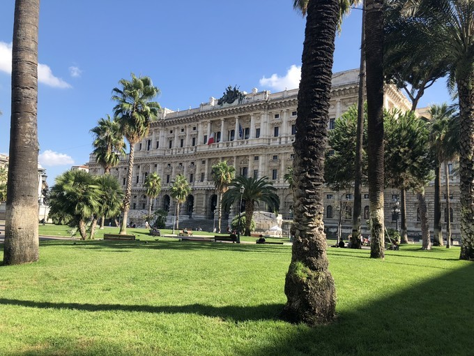
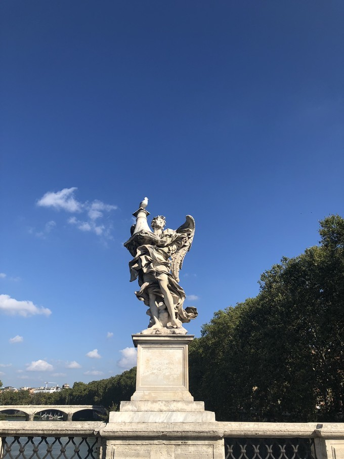
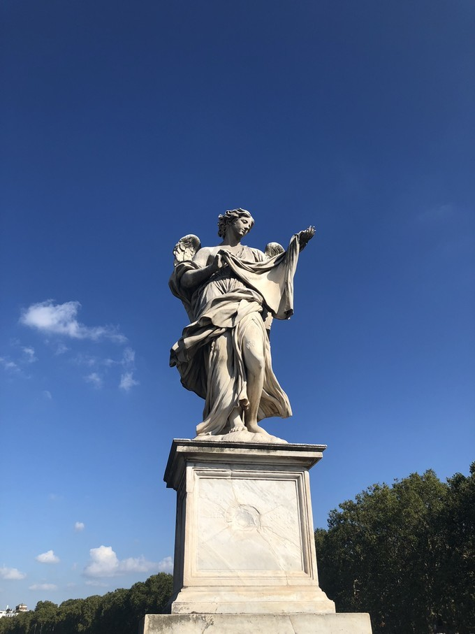
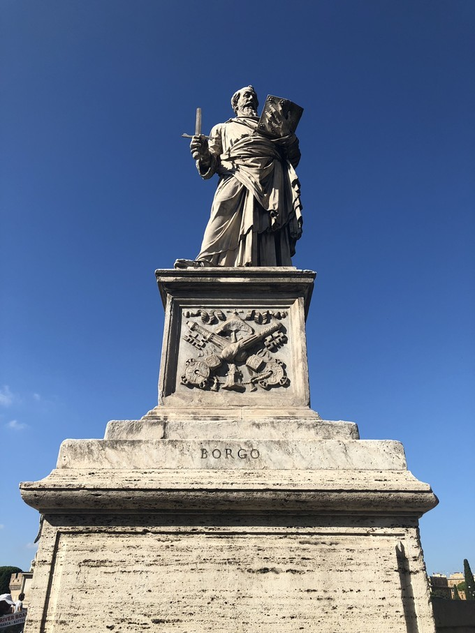
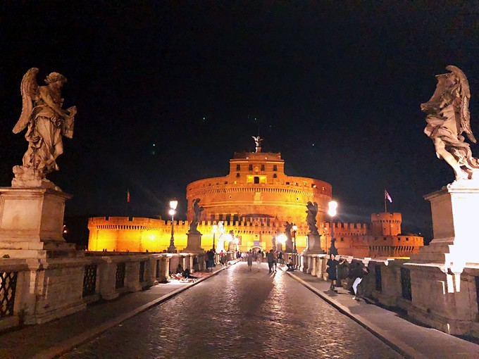
版权所有 禁止盗版@王涛